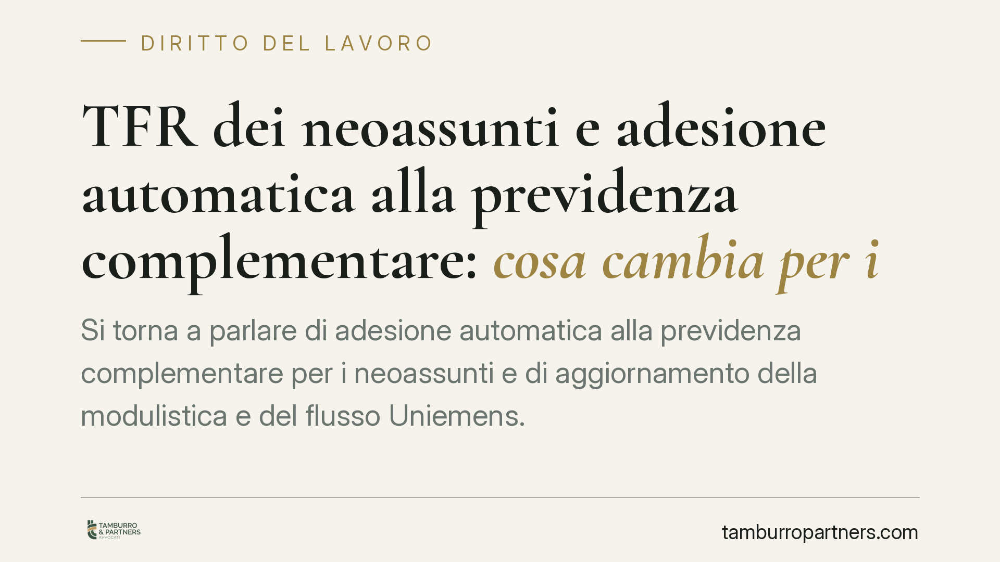

TFR dei neoassunti e adesione automatica alla previdenza complementare: cosa cambia per i datori di lavoro
Si torna a parlare di adesione automatica alla previdenza complementare per i neoassunti e di aggiornamento della modulistica e del flusso Uniemens. Alcuni dettagli operativi circolati nelle ultime settimane non risultano, allo stato, confermati da provvedimenti ufficiali: li segnaliamo come tali. Ricostruiamo la cornice normativa certa e indichiamo ai datori di lavoro cosa monitorare prima di adeguare le procedure interne di gestione del TFR.

Il fatto
Nelle scorse settimane sono circolate indicazioni su un aggiornamento della modulistica per la destinazione del trattamento di fine rapporto (TFR) dei neoassunti e su un nuovo codice da inserire nel flusso Uniemens, l'invio telematico mensile con cui i datori comunicano all'INPS dati retributivi e contributivi.
Alcuni di questi elementi — l'esatta denominazione del nuovo modulo, il codice INPS da utilizzare, la data di decorrenza e gli estremi della novella normativa che introdurrebbe un'adesione automatica rafforzata — non risultano, alla data di redazione, confermati da provvedimenti ufficiali consultabili (atti INPS, decreti ministeriali, testo di legge con estremi verificabili). Li trattiamo quindi come informazioni da verificare e non li riportiamo come dati certi.
Quel che è utile fare, in attesa dei testi ufficiali, è richiamare la disciplina vigente e certa, che resta il quadro entro cui ogni aggiornamento dovrà inserirsi.
Inquadramento normativo
Il TFR è regolato dall'art. 2120 del codice civile, che ne definisce accantonamento e modalità di calcolo. La destinazione del TFR alla previdenza complementare è disciplinata dal D.lgs. 5 dicembre 2005, n. 252, in particolare dall'art. 8.
Due punti meritano di essere fissati con precisione.
Primo: il meccanismo del silenzio-assenso. Ai sensi dell'art. 8, comma 7, del D.lgs. 252/2005, il lavoratore dispone di sei mesi dall'assunzione per scegliere se mantenere il TFR in azienda o destinarlo a un fondo pensione. In assenza di una scelta esplicita entro tale termine, il TFR confluisce nella forma pensionistica complementare secondo i criteri di legge (conferimento tacito).
Secondo: la modulistica. La scelta del lavoratore è veicolata dai moduli introdotti con il D.M. 30 gennaio 2007 (storicamente TFR1 per chi è già in servizio e TFR2 per i neoassunti). Ogni eventuale nuovo modulo rappresenterebbe un'evoluzione di questo impianto, non una rottura della cornice generale.
Gli attori restano INPS (gestione del flusso Uniemens e, in determinati casi, destinatario del TFR), i Ministeri del Lavoro e dell'Economia (indirizzo e provvedimenti attuativi), la COVIP (vigilanza sui fondi pensione) e, naturalmente, datori di lavoro e lavoratori.
Implicazioni pratiche
Per il datore di lavoro, un'eventuale riforma della modulistica e del flusso Uniemens significherebbe adeguare procedure di onboarding, software paghe e tracciati telematici. Nulla di straordinario, ma da pianificare per tempo: un errore di compilazione sul codice o sul modulo incide sulla corretta destinazione del TFR.
Per il neoassunto, il punto sensibile è la consapevolezza della scelta. Il silenzio-assenso non è una penalizzazione, ma produce effetti concreti sulla posizione previdenziale. L'informativa resa dal datore all'atto dell'assunzione è dunque un adempimento sostanziale, non formale.
Per i fondi pensione e per la COVIP, l'eventuale rafforzamento dell'adesione automatica sposterebbe flussi e richiederebbe allineamento delle procedure di accesso e di conferimento.
Cosa fare in concreto
- Verificate le fonti ufficiali prima di modificare le procedure: pubblicate messaggi e circolari INPS, decreti ministeriali in Gazzetta Ufficiale, documenti COVIP. Non adeguate i sistemi sulla base di anticipazioni non confermate.
- Mappate i vostri processi di onboarding: individuate dove e come viene raccolta oggi la scelta sul TFR, così da intervenire rapidamente quando i testi definitivi saranno pubblicati.
- Presidiate il termine dei sei mesi dall'assunzione (art. 8, comma 7, D.lgs. 252/2005): tracciate la decorrenza per ciascun neoassunto ed evitate conferimenti taciti non gestiti.
- Aggiornate l'informativa al lavoratore, verificando che illustri in modo chiaro opzioni, termini ed effetti del silenzio-assenso.
- Coordinatevi con consulente del lavoro e fornitore del software paghe per allineare i tracciati Uniemens non appena le specifiche tecniche definitive saranno rilasciate.
Avvertenza
I dati operativi non confermati citati in apertura (denominazione del modulo, codice Uniemens, data di decorrenza, estremi della novella) vanno considerati provvisori fino alla pubblicazione dei relativi provvedimenti ufficiali. Consigliamo di assumere decisioni organizzative solo sulla base dei testi definitivi.
Contributo informativo a cura di Tamburro & Partners Avvocati. Non costituisce parere legale.
Ogni storia di lavoro ha i suoi tempi.
Se gestisci HR e vuoi un confronto su contenzioso, ispezioni o licenziamenti, scrivi allo studio. Ti rispondiamo entro un giorno lavorativo.